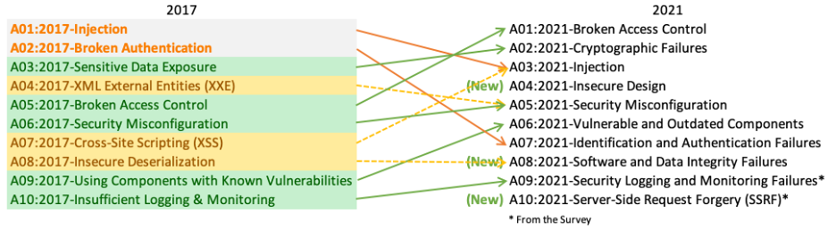

Exploitation
OWASP TOP 10 :
https://owasp.org/www-project-top-ten/Top 10 Web Application Security Risks
•
A01:2021-Broken Access Control moves up from the fifth position; 94% of applications were tested for some form of broken access control. The 34 Common Weakness Enumerations (CWEs) mapped to Broken Access Control had more occurrences in applications than any other category.
•
A02:2021-Cryptographic Failures shifts up one position to #2, previously known as Sensitive Data Exposure, which was broad symptom rather than a root cause. The renewed focus here is on failures related to cryptography which often leads to sensitive data exposure or system compromise.
•
A03:2021-Injection slides down to the third position. 94% of the applications were tested for some form of injection, and the 33 CWEs mapped into this category have the second most occurrences in applications. Cross-site Scripting is now part of this category in this edition.
•
A04:2021-Insecure Design is a new category for 2021, with a focus on risks related to design flaws. If we genuinely want to “move left” as an industry, it calls for more use of threat modeling, secure design patterns and principles, and reference architectures.
•
A05:2021-Security Misconfiguration moves up from #6 in the previous edition; 90% of applications were tested for some form of misconfiguration. With more shifts into highly configurable software, it’s not surprising to see this category move up. The former category for XML External Entities (XXE) is now part of this category.
•
A06:2021-Vulnerable and Outdated Components was previously titled Using Components with Known Vulnerabilities and is #2 in the Top 10 community survey, but also had enough data to make the Top 10 via data analysis. This category moves up from #9 in 2017 and is a known issue that we struggle to test and assess risk. It is the only category not to have any Common Vulnerability and Exposures (CVEs) mapped to the included CWEs, so a default exploit and impact weights of 5.0 are factored into their scores.
•
A07:2021-Identification and Authentication Failures was previously Broken Authentication and is sliding down from the second position, and now includes CWEs that are more related to identification failures. This category is still an integral part of the Top 10, but the increased availability of standardized frameworks seems to be helping.
•
A08:2021-Software and Data Integrity Failures is a new category for 2021, focusing on making assumptions related to software updates, critical data, and CI/CD pipelines without verifying integrity. One of the highest weighted impacts from Common Vulnerability and Exposures/Common Vulnerability Scoring System (CVE/CVSS) data mapped to the 10 CWEs in this category. Insecure Deserialization from 2017 is now a part of this larger category.
•
A09:2021-Security Logging and Monitoring Failures was previously Insufficient Logging & Monitoring and is added from the industry survey (#3), moving up from #10 previously. This category is expanded to include more types of failures, is challenging to test for, and isn’t well represented in the CVE/CVSS data. However, failures in this category can directly impact visibility, incident alerting, and forensics.
•
A10:2021-Server-Side Request Forgery is added from the Top 10 community survey (#1). The data shows a relatively low incidence rate with above average testing coverage, along with above-average ratings for Exploit and Impact potential. This category represents the scenario where the security community members are telling us this is important, even though it’s not illustrated in the data at this time.